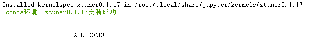

课时四 XTuner微调多模态Agent

1. 提交的作业结果
1.1 训练自己的小助手认知（记录复现过程并截图）
- 训练完小助手对话截图：
- 复现笔记： 复现步骤
1.2 将自我认知的模型上传到 OpenXLab，并将应用部署到 OpenXLab
1.3 复现多模态微调
- 复现结果截图
- 复现过程文档
2. 文档复现笔记
2.1 前置知识
2.2 复现步骤
2.2.1 环境配置
- 创建开发机

- 进入开发机创建conda环境

- 激活xtuner0.1.9环境&创建文件夹

- 获取0.1.9版本源码
- 从源码安装Xtuner

- 创建数据集文件夹地址

2.2.2 微调
2.2.2.1 准备配置文件
假如显示bash: xtuner: command not found的话可以考虑在终端输入 export PATH=$PATH:'/root/.local/bin'
我是又执行了一遍源码安装命令
- 配置文件

展开内容
==========================CONFIGS===========================
baichuan2_13b_base_qlora_alpaca_e3
baichuan2_13b_base_qlora_alpaca_enzh_e3
baichuan2_13b_base_qlora_alpaca_enzh_oasst1_e3
baichuan2_13b_base_qlora_alpaca_zh_e3
baichuan2_13b_base_qlora_arxiv_gentitle_e3
baichuan2_13b_base_qlora_code_alpaca_e3
baichuan2_13b_base_qlora_colorist_e5
baichuan2_13b_base_qlora_lawyer_e3
baichuan2_13b_base_qlora_oasst1_512_e3
baichuan2_13b_base_qlora_oasst1_e3
baichuan2_13b_base_qlora_open_platypus_e3
baichuan2_13b_base_qlora_sql_e3
baichuan2_13b_chat_qlora_alpaca_e3
baichuan2_13b_chat_qlora_alpaca_enzh_e3
baichuan2_13b_chat_qlora_alpaca_enzh_oasst1_e3
baichuan2_13b_chat_qlora_alpaca_zh_e3
baichuan2_13b_chat_qlora_code_alpaca_e3
baichuan2_13b_chat_qlora_lawyer_e3
baichuan2_13b_chat_qlora_oasst1_512_e3
baichuan2_13b_chat_qlora_oasst1_e3
baichuan2_13b_chat_qlora_open_platypus_e3
baichuan2_7b_base_qlora_alpaca_e3
baichuan2_7b_base_qlora_alpaca_enzh_e3
baichuan2_7b_base_qlora_alpaca_enzh_oasst1_e3
baichuan2_7b_base_qlora_alpaca_zh_e3
baichuan2_7b_base_qlora_arxiv_gentitle_e3
baichuan2_7b_base_qlora_code_alpaca_e3
baichuan2_7b_base_qlora_colorist_e5
baichuan2_7b_base_qlora_lawyer_e3
baichuan2_7b_base_qlora_oasst1_512_e3
baichuan2_7b_base_qlora_oasst1_e3
baichuan2_7b_base_qlora_open_platypus_e3
baichuan2_7b_base_qlora_sql_e3
baichuan2_7b_chat_qlora_alpaca_e3
baichuan2_7b_chat_qlora_alpaca_enzh_e3
baichuan2_7b_chat_qlora_alpaca_enzh_oasst1_e3
baichuan2_7b_chat_qlora_alpaca_zh_e3
baichuan2_7b_chat_qlora_code_alpaca_e3
baichuan2_7b_chat_qlora_lawyer_e3
baichuan2_7b_chat_qlora_oasst1_512_e3
baichuan2_7b_chat_qlora_oasst1_e3
baichuan2_7b_chat_qlora_open_platypus_e3
baichuan_13b_base_qlora_alpaca_e3
baichuan_13b_base_qlora_alpaca_enzh_e3
baichuan_13b_base_qlora_alpaca_enzh_oasst1_e3
baichuan_13b_base_qlora_alpaca_zh_e3
baichuan_13b_base_qlora_arxiv_gentitle_e3
baichuan_13b_base_qlora_code_alpaca_e3
baichuan_13b_base_qlora_colorist_e5
baichuan_13b_base_qlora_lawyer_e3
baichuan_13b_base_qlora_medical_e1
baichuan_13b_base_qlora_moss_sft_all_e1
baichuan_13b_base_qlora_moss_sft_all_e2_gpu8
baichuan_13b_base_qlora_moss_sft_plugins_e1
baichuan_13b_base_qlora_oasst1_512_e3
baichuan_13b_base_qlora_oasst1_e3
baichuan_13b_base_qlora_open_platypus_e3
baichuan_13b_base_qlora_openorca_e1
baichuan_13b_base_qlora_sql_e3
baichuan_13b_base_qlora_tiny_codes_e1
baichuan_13b_chat_qlora_alpaca_e3
baichuan_13b_chat_qlora_alpaca_enzh_e3
baichuan_13b_chat_qlora_alpaca_enzh_oasst1_e3
baichuan_13b_chat_qlora_alpaca_zh_e3
baichuan_13b_chat_qlora_arxiv_gentitle_e3
baichuan_13b_chat_qlora_code_alpaca_e3
baichuan_13b_chat_qlora_colorist_e5
baichuan_13b_chat_qlora_lawyer_e3
baichuan_13b_chat_qlora_medical_e1
baichuan_13b_chat_qlora_oasst1_512_e3
baichuan_13b_chat_qlora_oasst1_e3
baichuan_13b_chat_qlora_open_platypus_e3
baichuan_13b_chat_qlora_openorca_e1
baichuan_13b_chat_qlora_sql_e3
baichuan_13b_chat_qlora_tiny_codes_e1
baichuan_7b_qlora_alpaca_e3
baichuan_7b_qlora_alpaca_enzh_e3
baichuan_7b_qlora_alpaca_enzh_oasst1_e3
baichuan_7b_qlora_alpaca_zh_e3
baichuan_7b_qlora_arxiv_gentitle_e3
baichuan_7b_qlora_code_alpaca_e3
baichuan_7b_qlora_colorist_e5
baichuan_7b_qlora_lawyer_e3
baichuan_7b_qlora_medical_e1
baichuan_7b_qlora_moss_sft_all_e1
baichuan_7b_qlora_moss_sft_all_e2_gpu8
baichuan_7b_qlora_moss_sft_plugins_e1
baichuan_7b_qlora_oasst1_512_e3
baichuan_7b_qlora_oasst1_e3
baichuan_7b_qlora_open_platypus_e3
baichuan_7b_qlora_openorca_e1
baichuan_7b_qlora_sql_e3
baichuan_7b_qlora_tiny_codes_e1
chatglm2_6b_qlora_alpaca_e3
chatglm2_6b_qlora_alpaca_enzh_e3
chatglm2_6b_qlora_alpaca_enzh_oasst1_e3
chatglm2_6b_qlora_alpaca_zh_e3
chatglm2_6b_qlora_arxiv_gentitle_e3
chatglm2_6b_qlora_code_alpaca_e3
chatglm2_6b_qlora_colorist_e5
chatglm2_6b_qlora_lawyer_e3
chatglm2_6b_qlora_medical_e1
chatglm2_6b_qlora_oasst1_512_e3
chatglm2_6b_qlora_oasst1_e3
chatglm2_6b_qlora_open_platypus_e3
chatglm2_6b_qlora_openorca_e1
chatglm2_6b_qlora_sql_e3
chatglm2_6b_qlora_tiny_codes_e1
chatglm3_6b_base_qlora_alpaca_e3
chatglm3_6b_base_qlora_alpaca_enzh_e3
chatglm3_6b_base_qlora_alpaca_enzh_oasst1_e3
chatglm3_6b_base_qlora_alpaca_zh_e3
chatglm3_6b_base_qlora_arxiv_gentitle_e3
chatglm3_6b_base_qlora_code_alpaca_e3
chatglm3_6b_base_qlora_colorist_e5
chatglm3_6b_base_qlora_lawyer_e3
chatglm3_6b_base_qlora_medical_e1
chatglm3_6b_base_qlora_oasst1_512_e3
chatglm3_6b_base_qlora_oasst1_e3
chatglm3_6b_base_qlora_open_platypus_e3
chatglm3_6b_base_qlora_openorca_e1
chatglm3_6b_base_qlora_sql_e3
chatglm3_6b_base_qlora_tiny_codes_e1
chatglm3_6b_qlora_alpaca_e3
chatglm3_6b_qlora_alpaca_enzh_e3
chatglm3_6b_qlora_alpaca_enzh_oasst1_e3
chatglm3_6b_qlora_alpaca_zh_e3
chatglm3_6b_qlora_arxiv_gentitle_e3
chatglm3_6b_qlora_code_alpaca_e3
chatglm3_6b_qlora_colorist_e5
chatglm3_6b_qlora_lawyer_e3
chatglm3_6b_qlora_medical_e1
chatglm3_6b_qlora_oasst1_512_e3
chatglm3_6b_qlora_oasst1_e3
chatglm3_6b_qlora_open_platypus_e3
chatglm3_6b_qlora_openorca_e1
chatglm3_6b_qlora_sql_e3
chatglm3_6b_qlora_tiny_codes_e1
deepspeed_zero1
deepspeed_zero2
deepspeed_zero2_offload
deepspeed_zero3
deepspeed_zero3_offload
internlm_20b_qlora_alpaca_e3
internlm_20b_qlora_alpaca_enzh_e3
internlm_20b_qlora_alpaca_enzh_oasst1_e3
internlm_20b_qlora_alpaca_zh_e3
internlm_20b_qlora_arxiv_gentitle_e3
internlm_20b_qlora_code_alpaca_e3
internlm_20b_qlora_colorist_e5
internlm_20b_qlora_lawyer_e3
internlm_20b_qlora_msagent_react_e3_gpu8
internlm_20b_qlora_oasst1_512_e3
internlm_20b_qlora_oasst1_e3
internlm_20b_qlora_open_platypus_e3
internlm_20b_qlora_sql_e3
internlm_7b_full_alpaca_e3
internlm_7b_full_alpaca_enzh_e3
internlm_7b_full_alpaca_enzh_oasst1_e3
internlm_7b_full_alpaca_zh_e3
internlm_7b_full_oasst1_e3
internlm_7b_qlora_alpaca_e3
internlm_7b_qlora_alpaca_enzh_e3
internlm_7b_qlora_alpaca_enzh_oasst1_e3
internlm_7b_qlora_alpaca_zh_e3
internlm_7b_qlora_arxiv_gentitle_e3
internlm_7b_qlora_code_alpaca_e3
internlm_7b_qlora_colorist_e5
internlm_7b_qlora_lawyer_e3
internlm_7b_qlora_medical_e1
internlm_7b_qlora_moss_sft_all_e1
internlm_7b_qlora_moss_sft_all_e2_gpu8
internlm_7b_qlora_moss_sft_plugins_e1
internlm_7b_qlora_msagent_react_e3_gpu8
internlm_7b_qlora_oasst1_512_e3
internlm_7b_qlora_oasst1_e3
internlm_7b_qlora_oasst1_e3_hf
internlm_7b_qlora_oasst1_mmlu_e3
internlm_7b_qlora_open_platypus_e3
internlm_7b_qlora_openorca_e1
internlm_7b_qlora_sql_e3
internlm_7b_qlora_tiny_codes_e1
internlm_chat_20b_qlora_alpaca_e3
internlm_chat_20b_qlora_alpaca_enzh_e3
internlm_chat_20b_qlora_alpaca_enzh_oasst1_e3
internlm_chat_20b_qlora_alpaca_zh_e3
internlm_chat_20b_qlora_code_alpaca_e3
internlm_chat_20b_qlora_lawyer_e3
internlm_chat_20b_qlora_oasst1_512_e3
internlm_chat_20b_qlora_oasst1_e3
internlm_chat_20b_qlora_open_platypus_e3
internlm_chat_7b_qlora_alpaca_e3
internlm_chat_7b_qlora_alpaca_enzh_e3
internlm_chat_7b_qlora_alpaca_enzh_oasst1_e3
internlm_chat_7b_qlora_alpaca_zh_e3
internlm_chat_7b_qlora_arxiv_gentitle_e3
internlm_chat_7b_qlora_code_alpaca_e3
internlm_chat_7b_qlora_colorist_e5
internlm_chat_7b_qlora_lawyer_e3
internlm_chat_7b_qlora_medical_e1
internlm_chat_7b_qlora_oasst1_512_e3
internlm_chat_7b_qlora_oasst1_e3
internlm_chat_7b_qlora_open_platypus_e3
internlm_chat_7b_qlora_openorca_e1
internlm_chat_7b_qlora_sql_e3
internlm_chat_7b_qlora_tiny_codes_e1
llama2_70b_int8_lora_open_platypus_e1
llama2_70b_int8_lora_open_platypus_e1_hf
llama2_70b_qlora_open_platypus_e1
llama2_70b_qlora_open_platypus_e1_hf
llama2_7b_chat_qlora_alpaca_e3
llama2_7b_chat_qlora_alpaca_enzh_e3
llama2_7b_chat_qlora_alpaca_enzh_oasst1_e3
llama2_7b_chat_qlora_alpaca_zh_e3
llama2_7b_chat_qlora_arxiv_gentitle_e3
llama2_7b_chat_qlora_code_alpaca_e3
llama2_7b_chat_qlora_colorist_e5
llama2_7b_chat_qlora_lawyer_e3
llama2_7b_chat_qlora_medical_e1
llama2_7b_chat_qlora_oasst1_512_e3
llama2_7b_chat_qlora_oasst1_e3
llama2_7b_chat_qlora_open_platypus_e3
llama2_7b_chat_qlora_openorca_e1
llama2_7b_chat_qlora_sql_e3
llama2_7b_chat_qlora_tiny_codes_e1
llama2_7b_full_wizardlm_e1
llama2_7b_qlora_alpaca_e3
llama2_7b_qlora_alpaca_enzh_e3
llama2_7b_qlora_alpaca_enzh_oasst1_e3
llama2_7b_qlora_alpaca_zh_e3
llama2_7b_qlora_arxiv_gentitle_e3
llama2_7b_qlora_code_alpaca_e3
llama2_7b_qlora_colorist_e5
llama2_7b_qlora_lawyer_e3
llama2_7b_qlora_medical_e1
llama2_7b_qlora_moss_sft_all_e1
llama2_7b_qlora_moss_sft_all_e2_gpu8
llama2_7b_qlora_moss_sft_plugins_e1
llama2_7b_qlora_msagent_react_e3_gpu8
llama2_7b_qlora_oasst1_512_e3
llama2_7b_qlora_oasst1_e3
llama2_7b_qlora_open_platypus_e3
llama2_7b_qlora_openorca_e1
llama2_7b_qlora_sql_e3
llama2_7b_qlora_tiny_codes_e1
llama_7b_qlora_alpaca_e3
llama_7b_qlora_alpaca_enzh_e3
llama_7b_qlora_alpaca_enzh_oasst1_e3
llama_7b_qlora_alpaca_zh_e3
llama_7b_qlora_arxiv_gentitle_e3
llama_7b_qlora_code_alpaca_e3
llama_7b_qlora_colorist_e5
llama_7b_qlora_lawyer_e3
llama_7b_qlora_medical_e1
llama_7b_qlora_moss_sft_all_e1
llama_7b_qlora_moss_sft_all_e2_gpu8
llama_7b_qlora_moss_sft_plugins_e1
llama_7b_qlora_oasst1_512_e3
llama_7b_qlora_oasst1_e3
llama_7b_qlora_open_platypus_e3
llama_7b_qlora_openorca_e1
llama_7b_qlora_sql_e3
llama_7b_qlora_tiny_codes_e1
mistral_7b_qlora_skypile_pretrain_e1
qwen_7b_chat_qlora_alpaca_e3
qwen_7b_chat_qlora_alpaca_enzh_e3
qwen_7b_chat_qlora_alpaca_enzh_oasst1_e3
qwen_7b_chat_qlora_alpaca_zh_e3
qwen_7b_chat_qlora_arxiv_gentitle_e3
qwen_7b_chat_qlora_code_alpaca_e3
qwen_7b_chat_qlora_colorist_e5
qwen_7b_chat_qlora_lawyer_e3
qwen_7b_chat_qlora_medical_e1
qwen_7b_chat_qlora_oasst1_512_e3
qwen_7b_chat_qlora_oasst1_e3
qwen_7b_chat_qlora_open_platypus_e3
qwen_7b_chat_qlora_openorca_e1
qwen_7b_chat_qlora_sql_e3
qwen_7b_chat_qlora_tiny_codes_e1
qwen_7b_qlora_alpaca_e3
qwen_7b_qlora_alpaca_enzh_e3
qwen_7b_qlora_alpaca_enzh_oasst1_e3
qwen_7b_qlora_alpaca_zh_e3
qwen_7b_qlora_arxiv_gentitle_e3
qwen_7b_qlora_code_alpaca_e3
qwen_7b_qlora_colorist_e5
qwen_7b_qlora_lawyer_e3
qwen_7b_qlora_medical_e1
qwen_7b_qlora_moss_sft_all_e1
qwen_7b_qlora_moss_sft_all_e2_gpu8
qwen_7b_qlora_moss_sft_plugins_e1
qwen_7b_qlora_oasst1_512_e3
qwen_7b_qlora_oasst1_e3
qwen_7b_qlora_open_platypus_e3
qwen_7b_qlora_openorca_e1
qwen_7b_qlora_sql_e3
qwen_7b_qlora_tiny_codes_e1
starcoder_qlora_stack_exchange_example
yi_34b_qlora_alpaca_enzh_e3
yi_6b_qlora_alpaca_enzh_e3
zephyr_7b_beta_qlora_alpaca_e3
=============================================================
- 拷贝一个配置文件到当前目录：

2.2.2.2 模型设置
- 设置软链接
2.2.2.3 数据集下载
- 从开发机share地址拷贝到ft-oasst1文件夹下

2.2.2.4 修改配置文件
- 修改internlm_chat_7b_qlora_oasst1_e3_copy.py配置文件模型及数据为本地模型及数据
# pretrained_model_name_or_path = 'internlm/internlm-chat-7b'
pretrained_model_name_or_path = 'internlm/internlm-chat-7b'
# Data
# data_path = 'timdettmers/openassistant-guanaco'
data_path = './openassistant-guanaco'

修改后的配置文件internlm_chat_7b_qlora_oasst1_e3_copy.py
internlm_chat_7b_qlora_oasst1_e3_copy.py
1 2 3 4 5 6 7 8 9 10 11 12 13 14 15 16 17 18 19 20 21 22 23 24 25 26 27 28 29 30 31 32 33 34 35 36 37 38 39 40 41 42 43 44 45 46 47 48 49 50 51 52 53 54 55 56 57 58 59 60 61 62 63 64 65 66 67 68 69 70 71 72 73 74 75 76 77 78 79 80 81 82 83 84 85 86 87 88 89 90 91 92 93 94 95 96 97 98 99 100 101 102 103 104 105 106 107 108 109 110 111 112 113 114 115 116 117 118 119 120 121 122 123 124 125 126 127 128 129 130 131 132 133 134 135 136 137 138 139 140 141 142 143 144 145 146 147 148 149 150 151 152 153 154 155 156 157 158 159 160 161 162 163 164 165 166 167 168 169 170 171 172 173 174 175 176 177 178 179 180 181 182 183 184 | |
2.2.2.5 开始微调
- 训练
# 单卡
## 用刚才改好的config文件训练
xtuner train ./internlm_chat_7b_qlora_oasst1_e3_copy.py --deepspeed deepspeed_zero2

2.2.2.6 转换PTH模型为LoRA模型
mkdir hf
export MKL_SERVICE_FORCE_INTEL=1
export MKL_THREADING_LAYER=GNU
xtuner convert pth_to_hf ./internlm_chat_7b_qlora_oasst1_e3_copy.py ./work_dirs/internlm_chat_7b_qlora_oasst1_e3_copy/epoch_1.pth ./hf
2.2.3 部署&测试
2.2.3.1 合并hf的adapter到大模型
2.2.3.2 与合并后的模型对话
2.2.3.3 运行测试cli_demo.py
修改模型为合并后的模型
运行示例脚本
2.2.4 模型&应用部署到OpenXLab
2.2.5 多模态微调
2.2.5.1 环境设置
- 创建开发机
填写 开发机名称 后，点击 选择镜像 使用 Cuda11.7-conda 镜像，然后在资源配置中，使用 50% A100 * 1 的选项，然后立即创建开发机器。
- Xtuner安装
- conda环境安装

- 激活环境
- 获取源码&安装
# 进入家目录 （~的意思是 “当前用户的home路径”） cd ~ # 创建版本文件夹并进入 mkdir -p /root/xtuner0117 && cd /root/xtuner0117 # 拉取 0.1.17 的版本源码 git clone -b v0.1.17 https://github.com/InternLM/xtuner # 无法访问github的用户请从 gitee 拉取: # git clone -b v0.1.15 https://gitee.com/Internlm/xtuner # 进入源码目录 cd /root/xtuner0117/xtuner # 从源码安装 XTuner pip install -e '.[all]' && cd ~

2.2.5.2 预训练
提供了Pretrain阶段的产物——iter_2181.pth文件。它就是幼稚园阶段的Image Projector！大家带着iter_2181.pth文件继续进入下一阶段进行Finetune即可。
2.2.5.3 微调
- 格式示意
[
{
"id": "000000033471",
"image": "coco/train2017/000000033471.jpg",
"conversations": [
{
"from": "human",
"value": "<image>\nWhat are the colors of the bus in the image?"
},
{
"from": "gpt",
"value": "The bus in the image is white and red."
},
{
"from": "human",
"value": "What feature can be seen on the back of the bus?"
},
{
"from": "gpt",
"value": "The back of the bus features an advertisement."
},
{
"from": "human",
"value": "Is the bus driving down the street or pulled off to the side?"
},
{
"from": "gpt",
"value": "The bus is driving down the street, which is crowded with people and other vehicles."
}
]
},
{
"id": "000000052846",
"image": "coco/train2017/000000052846.jpg",
"conversations": [
{
"from": "human",
"value": "<image>\nWhere is the cat positioned in the image?"
},
{
"from": "gpt",
"value": "The cat is positioned on top of the back of the couch in the living room."
}
]
}
]
```
- 生成问答对数据(repeat_data.json)
```bash
cd ~ && git clone https://github.com/InternLM/tutorial -b camp2 && conda activate xtuner0.1.17 && cd tutorial
python /root/tutorial/xtuner/llava/llava_data/repeat.py \
-i /root/tutorial/xtuner/llava/llava_data/unique_data.json \
-o /root/tutorial/xtuner/llava/llava_data/repeated_data.json \
-n 200
```

- 获取配置文件
```bash
cp /root/tutorial/xtuner/llava/llava_data/internlm2_chat_1_8b_llava_tutorial_fool_config.py /root/tutorial/xtuner/llava/llava_internlm2_chat_1_8b_qlora_clip_vit_large_p14_336_lora_e1_gpu8_finetune_copy.py
- 开始微调
cd /root/tutorial/xtuner/llava/
xtuner train /root/tutorial/xtuner/llava/llava_internlm2_chat_1_8b_qlora_clip_vit_large_p14_336_lora_e1_gpu8_finetune_copy.py --deepspeed deepspeed_zero2
2.2.5.4 微调模型对话
- 多卡环境设置
- pth转huggingface
xtuner convert pth_to_hf \
/root/tutorial/xtuner/llava/llava_internlm2_chat_1_8b_qlora_clip_vit_large_p14_336_lora_e1_gpu8_finetune_copy.py \
/root/tutorial/xtuner/llava/work_dirs/llava_internlm2_chat_1_8b_qlora_clip_vit_large_p14_336_lora_e1_gpu8_finetune_copy/iter_1200.pth \
/root/tutorial/xtuner/llava/llava_data/iter_1200_hf
- chat
xtuner chat /root/share/new_models/Shanghai_AI_Laboratory/internlm2-chat-1_8b \
--visual-encoder /root/share/new_models/openai/clip-vit-large-patch14-336 \
--llava /root/tutorial/xtuner/llava/llava_data/iter_1200_hf \
--prompt-template internlm2_chat \
--image /root/tutorial/xtuner/llava/llava_data/test_img/oph.jpg